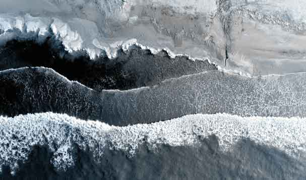

The Visible Edge
An exploration on how reality becomes visible through contrast.
Core Transmission Threshold
We often seek harmony by reducing difference.
Yet difference is what makes perception possible.
Without darkness, light is invisible.
Without silence, sound loses shape.
Without unfamiliarity, learning cannot occur.
Without contrast, form dissolves into uniformity.
This Signal examines how boundaries generate perception.
This is not teaching balance.
This is teaching appreciation for contrast.
Opening Context
Many systems seek harmony. Many teachings seek resolution. Many philosophies seek
the place where differences disappear. This signal fragment begins elsewhere. It
begins by asking:
What if difference is not the problem?
What if difference is the reason anything can be perceived at all?
The intention is not about resolving opposites, it is about recognizing the creative and perceptual value of their existence, and appreciating the importance of their separation.
Core Concept
The Visible Edge proposes that contrast is not an obstacle to unity or to understanding reality, but the mechanism through which reality becomes perceptible. A world without difference would contain no shape, no distinction, no discovery, no learning, no perception.
Boundaries do not merely separate, they reveal. Difference is not the interruption of reality, nor reality breaking apart. Difference is creating the conditions through which the world becomes knowable. Boundaries creates visibility. Contrast makes form possible.
Pattern Manifestations

Natural Systems: Shorelines; Forest edges; Mountain horizons; Atmospheric layers; Twilight; Ecotones; Seasonal transitions.
Learning Systems:
- Known ↔ Unknown
- Competence ↔ Beginnerhood
- Certainty ↔ Curiosity
Creative Systems:
- Order ↔ Novelty
- Structure ↔ Exploration
- Pattern ↔ Variation
Psychological Systems:
- Self ↔ Other
- Identity ↔ Transformation
- Belief ↔ Mystery
Relational Systems: Difference revealing assumption; Otherness expanding perspective; Contrast creating meaning.
Four Revelations of The Visible Edge
Closing Signal
The Visible Edge is not an argument for division. It is an invitation to reconsider the purpose of distinction. Many of the most important phenomena in existence occur not within categories, but between them: the horizon, shoreline, forest edge, twilight, threshold. These places do not merely separate worlds, they reveal them.
Reality does not become visible after difference.
Reality becomes visible through it.
- Recorded while observing the recurring appearance of thresholds across natural systems, perception, learning, relationships, creativity, and identity. Classification remains provisional. Signal state: Emerging.
- Earth Cycle 2026.06


I — The Illusion
The mind often assumes:
Difference creates problems.
Contrast creates conflict.
Boundaries create separation.
The Visible Edge proposes that this assumption is incomplete.
II — Observation
Light becomes visible beside shadow.
Sound becomes recognizable through silence.
Growth occurs at the boundary of familiarity and unfamiliarity.
Life flourishes where ecosystems overlap.
Form appears where conditions differ.
III — The Inversion
Without contrast there is nothing to perceive.
Uniformity conceals.
Difference reveals.
The visible world is largely an expression of boundaries.
IV — The Recognition
The places we often resist may contain the most information.
Thresholds. Transitions. Edges. Otherness. Uncertainty.
The edge is not merely where something ends.
It is where something becomes visible.